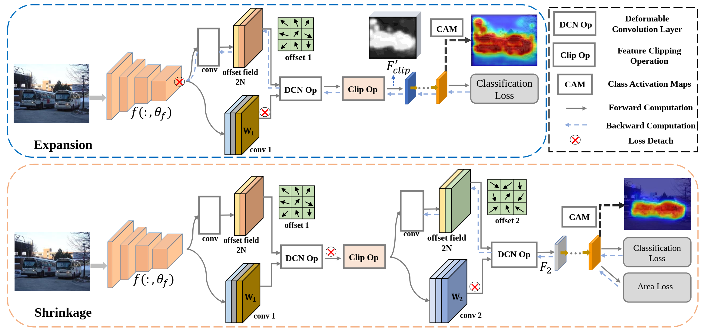
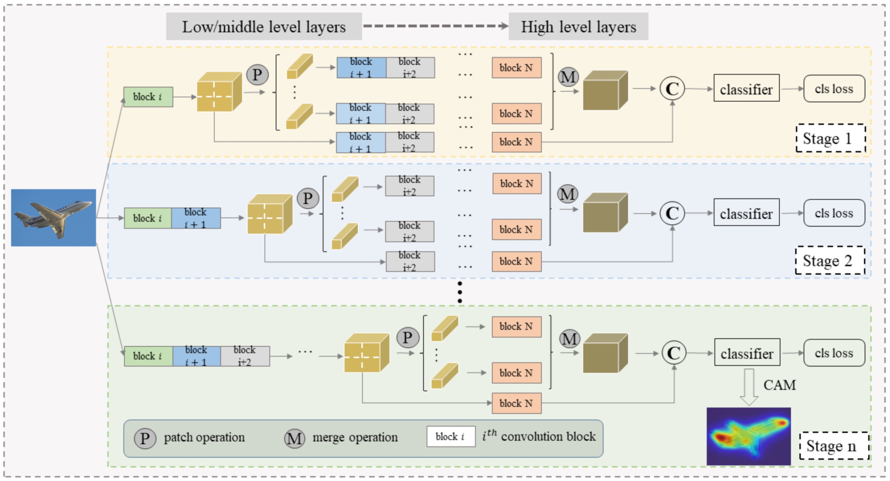

Jinlong LiEmail: jinlong.szu [at] gmail.com
|
|

Biography
My research interests lie in detection and segmentation, especially in weakly/semi supervised learning.
News
- 2022 Sept: Our work ESOL got accepted by NeurIPS 2022!
- 2022 Feb: Our work PPL got accepted by TMM 2022!
Selected Publications
|
 |
Expansion and Shrinkage of Localization for Weakly-Supervised Semantic Segmentation Jinlong Li, Zequn Jie, Xu Wang, Xiaolin Wei, Lin Ma.
Neural Information Processing Systems (NeurIPS), 2022. |
|
 |
Weakly Supervised Semantic Segmentation via Progressive Patch Learning Jinlong Li, Zequn Jie, Xu Wang, Yu Zhou, Xiaolin Wei, Lin Ma.
IEEE Transactions on Multimedia (TMM), 2022. |
|
Template gratefully stolen from here. |